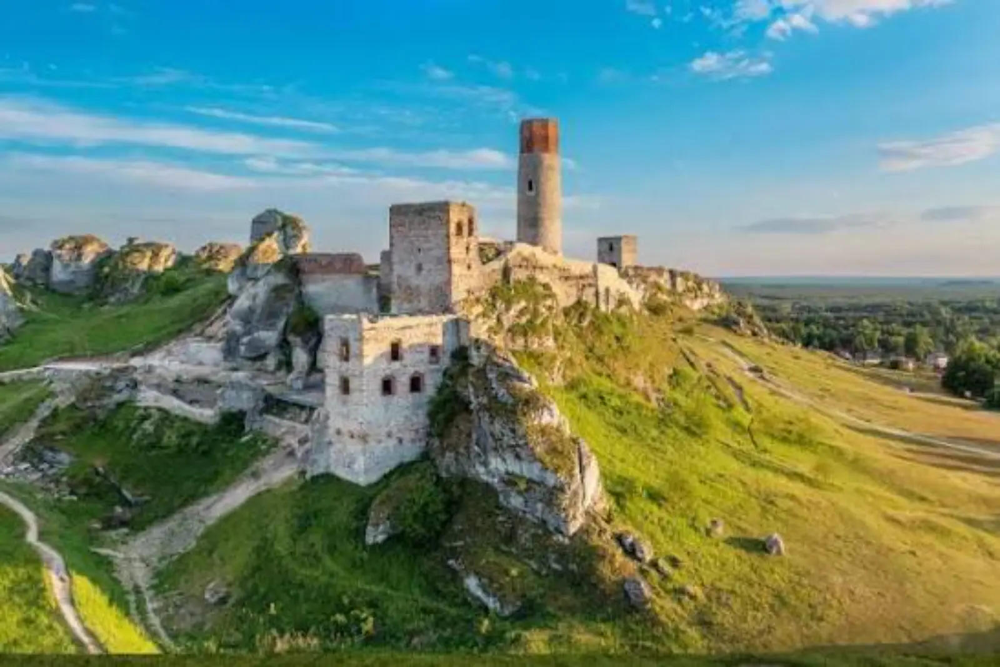

ARTICLE • October 1, 2026
Silesian Castle Trail — 5 Strongholds in One Weekend
Silesia is the most castle-rich region in Poland. From Ogrodzieniec to Pszczyna — here are 5 strongholds worth seeing in one weekend.

Silesia and the Kraków-Częstochowa Jura are the most castle-rich region in Poland. Within a hundred kilometers there are dozens of strongholds — from mighty defensive castles to romantic ruins. Here are 5 places worth seeing in one weekend.
1. Ogrodzieniec
The largest castle ruins of the Kraków-Częstochowa Jura. It stands on the highest hill of the Jura (515 m) and offers spectacular views of the area. It is worth visiting at sunset — the light on the ruins looks magical then.
2. Pieskowa Skała
A Renaissance castle on a rock, one of the most beautiful in Poland. It is located in Ojców National Park, right next to the famous Hercules' Club. It is worth combining a visit to the castle with a walk through the park.
3. Pszczyna
A palace with preserved 19th-century interiors, surrounded by an English park. One of the most beautiful magnate residences in Poland, where you can see how the aristocracy lived.
4. Będzin
A medieval castle in the city center, on a hill above the Czarna Przemsza. It is worth visiting not only the castle but also the surrounding streets — this is one of the oldest towns in the region.
5. Cieszyn
The Castle Hill with the Romanesque rotunda — one of the most valuable monuments in Poland. It is also worth climbing the Piast Tower and admiring the panorama of Cieszyn and its Czech neighbor.
How to Visit?
Castles are best visited slowly — one place per day, without haste. It is worth setting aside time for a walk in the park, coffee in the castle café, and a moment of reflection on history. Instead of running from castle to castle, choose two or three places and truly get to know them.